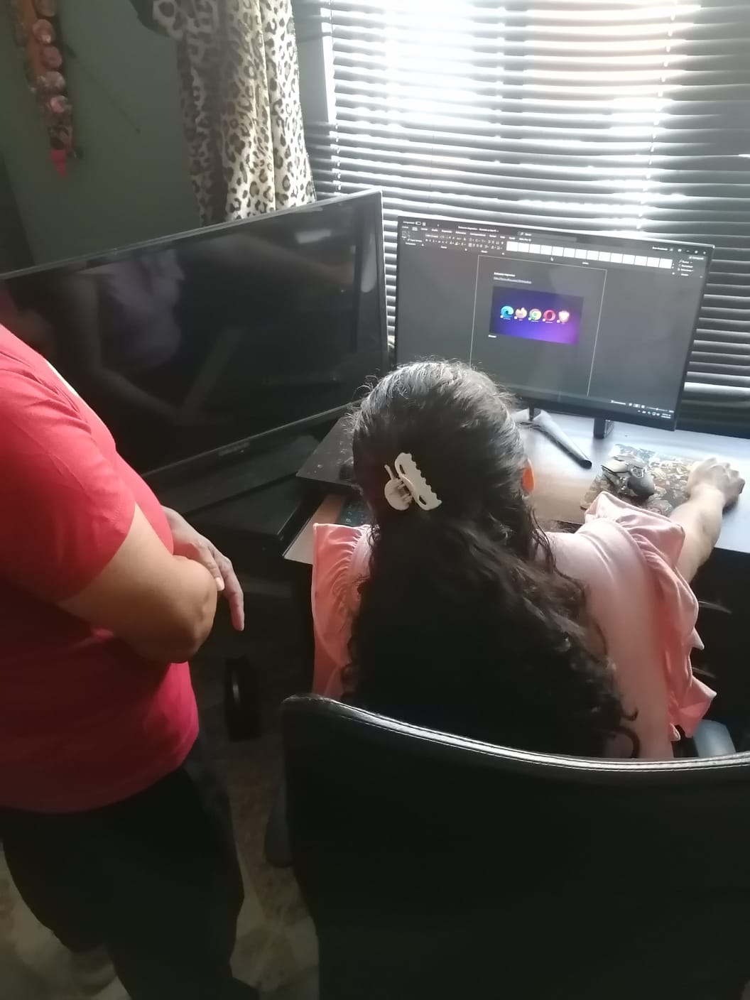
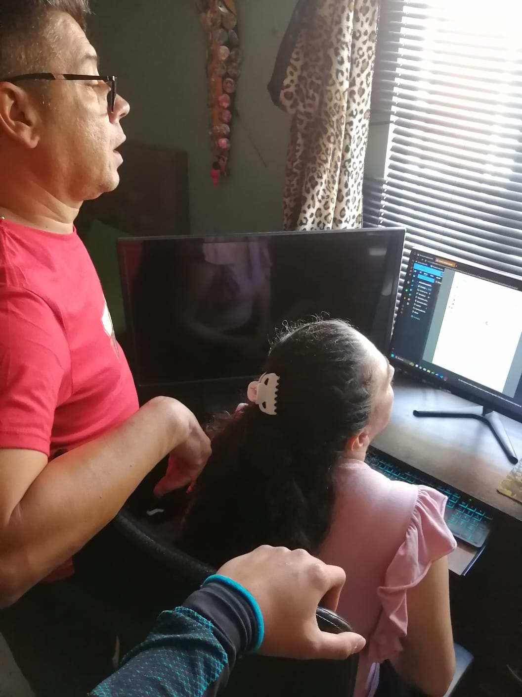
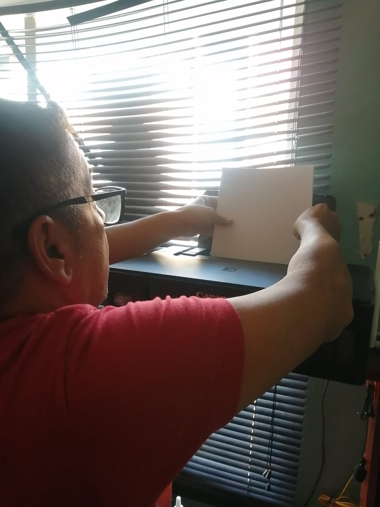
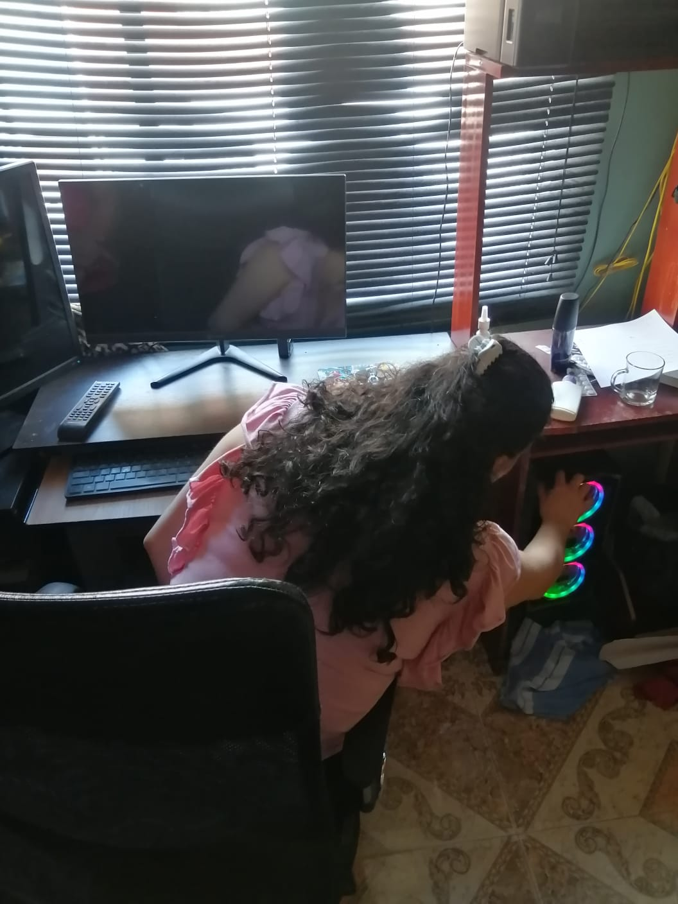
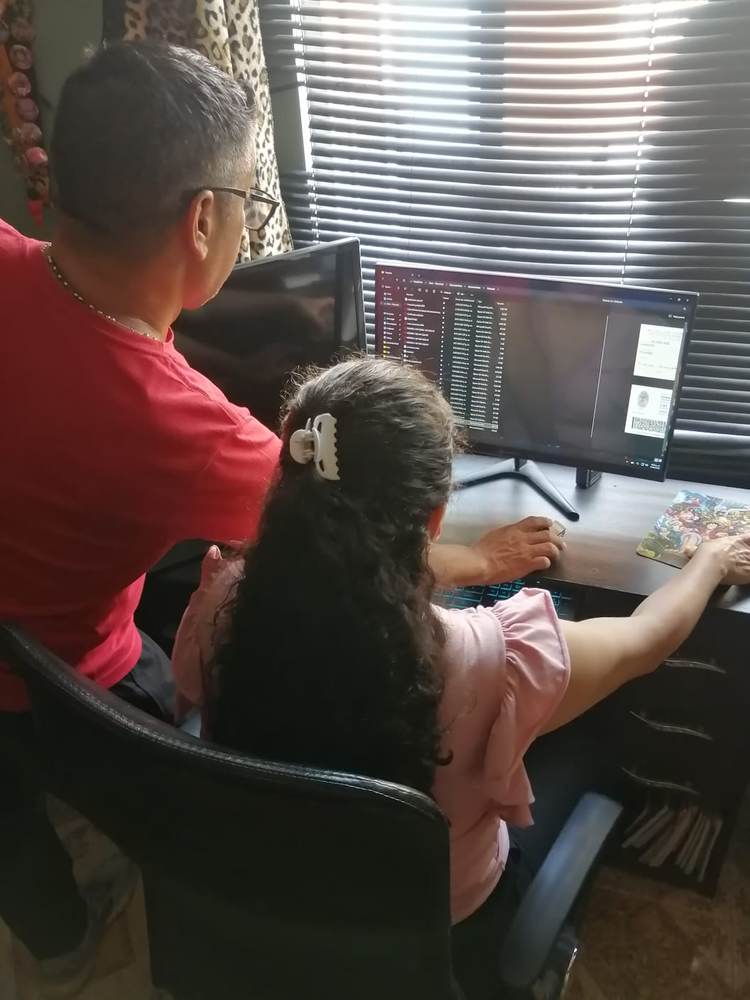
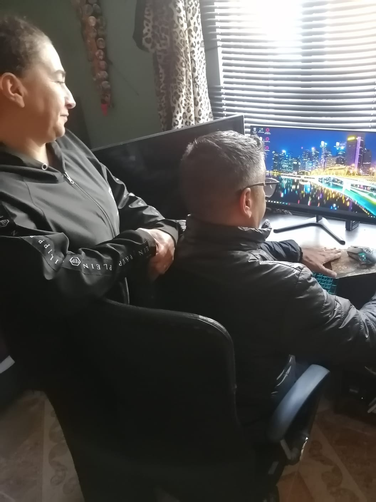
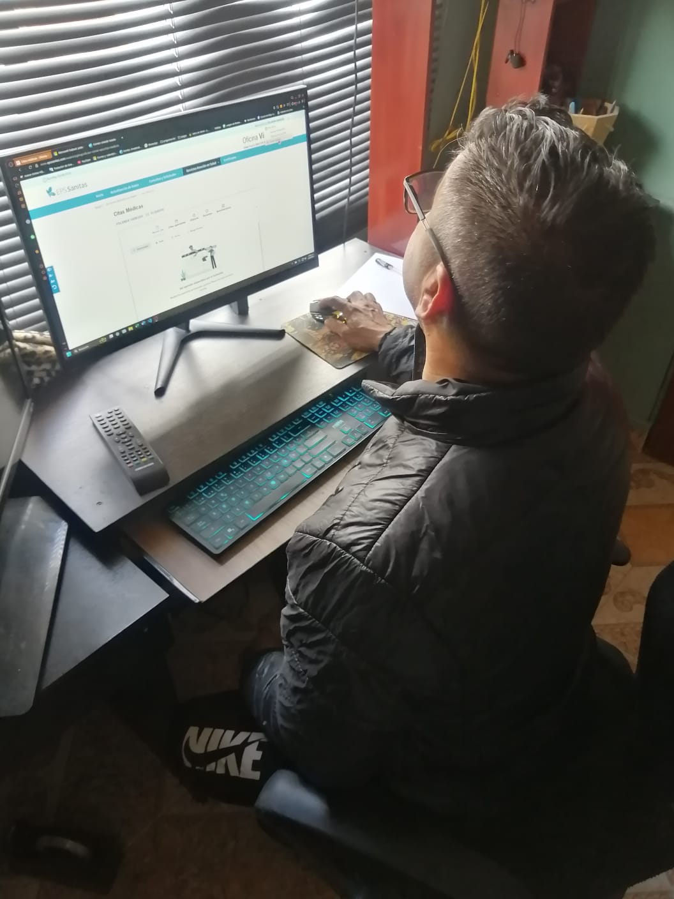
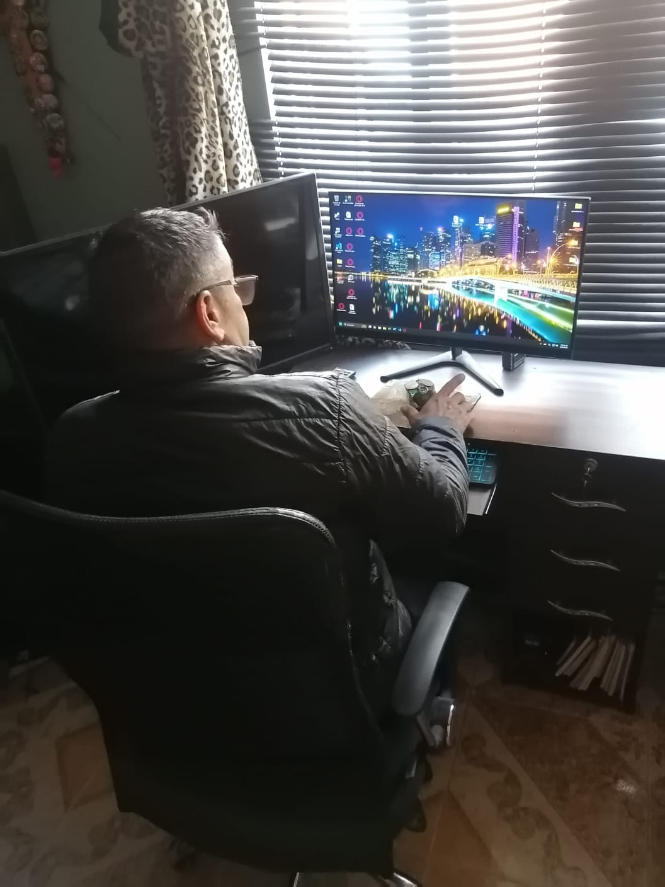

Titulo: Mis primeros pasos digitales

A continuacion se encuentran las evidencias de la practica
desarrollada el dia 23 de Julio de 2025.
En la imagen anterior se encuentran los señores Jose Arredondo y
Yolanda vanegas, que seran los participantes de esta practica social;
En la imagen se encuentran revisando y familiarizandose con el
computador por primera vez
Evidencias
-
En esta parte se esta dando un explicacion inicial a los señores Jose y Yolanda sobre el incio del computador y sus aplicaciones, en esta parte se estaba dando una breve explicacion de los navegadores
 -
A continuacion se esta dando una explicaion sobre el explorador de archivos y un adelanto de como navegar por el buscador, son temas que se abordaran con profundida en sigguientes sesiones, pero es bueno introducirlos poco a poco.
 -
La practica estaba avanzando tan bien que los participantes entendian muy rapido la informacion, por lo que se decidio en avanzar un poco mas y se les dio una explicacion del como utilizar la impresora, esto a peticion de los participantes. Es agradable ver la iniciativa que estan teniendo y lo rapido que reciben la informacion.

En la imagen se ve al señor Jose preparando la impresora para realizar el ejemplo de practica. -
Una vez terminada la explicacion y resolver las dudas que se presentaron, se comenzo a realizar la practica que se tenia preparada para ver el resultado de lo aprendido.

En la imagen esta la señora Yolanda empezando con la practica desde el inicio, encendiendo el computador, monitor y mouse desde el inicio. -
En esta imagen el señor Jose, esta realizando la practica para examinar lo aprendido, buscando un archivo de ejemplo e imprimiendolo.

Reflexion personal
Este fue solo el inicio de la practica de responsabilidad social, con el fin de enseñar el uso del computador a personas que no han tenido mucho acercamiento con las tecnologias, estos 2 señores estan en la edad de 49 y 55, no estan en una avanzada edad, pero aun asi su acercamiento con la tecnologia no ha sido muy profundo; En cualquie caso demostraron una alta iniciativa de aprender, el entusiamo que le metian a la practica es alentador, y ver la energia y actitud con que realizan la practica, hacen de esta actividad una experiencia agradable, y me dan animos de seguir haciendolo con un grupo un poco mas grande despues de finalizar el trabajo con ellos.
Titulo: Madurando Conocimientos

A continuacion se encuentran las evidencias de la practica
desarrollada el dia 30 de Julio de 2025.
En la imagen anterior se encuentran los señores Jose Arredondo y
Yolanda vanegas, que seran los participantes de esta practica social;
En la imagen se encuentran recordando los conocimientos adquiridos la
semana pasada, y preparandose para los nuevos conocimientos.
Una vez repasados los conocimientos adquiridos, ya estan listos para
empezar con los nuevos, en esta practica se se dara mas manejo al
navegador pasando por diferentes sitios web, entre ellos el correo:
iniciando sesion, enviando y leyendo correos, tambien paginas simples
como youtube o paginas de noticias, o realizando busquedas simples por
el navegador.
en la imagen se muestra al señor Jose navegando por la pagina de
Sanitas para el agendamiento de citas.
A peticion de los participantes, y la verdad me parecio buena la idea, se profundizo mas que todo el uso de la interfaz de sanitas para la solicitud de citas medicas y en el uso del correo para la lectura y escritura de correos. En la imagen se ve al señor Jose agendando un cita medica para el mismo.
En la imagen se ve al señor Jose en el escritorio del computador, preparandose a realizar la practica para evaluar los conocimientos adquiridos.
Reflexion personal
Esta practica tuvo mas retos que la sesion anterior, se vio un poco de
dificultad para el manejo de los conocimientos, pero es comprensible
debido a la cantidad de informacion que se manejo, aun asi, la actitud
y dispocision fue la adecuada, lograron un resultado optimo y cada vez
estan mas cerca de trabajar con mayor confianza y agilidad con el
computador.
Es gratificante ver el avance que se tiene con cada sesion y se espera
lograr aun mas crecimiento con el desarrollo de esta practica.
Referencias
- Cassetti, V. & Paredes Carbonell, J. J. (2020). La teoría del cambio: una herramienta para la planificación y la evaluación participativa en salud comunitaria. Gaceta Sanitaria, 34(3), 305-307.
- Pacheco Duarte, J. F. & Archila Quiñones, S. (2020). Guía para construir teorías del cambio en programas y proyectos sociales desde los principios generales de El Minuto de DiosLinks to an external site.. Corporación Universitaria Minuto de Dios.
- Pacheco Duarte, J. F. et al. (2022). Ruta de Innovación Social: Paso a paso para desarrollar innovaciones sociales (Documento Técnico 02). Corporación Universitaria Minuto de Dios